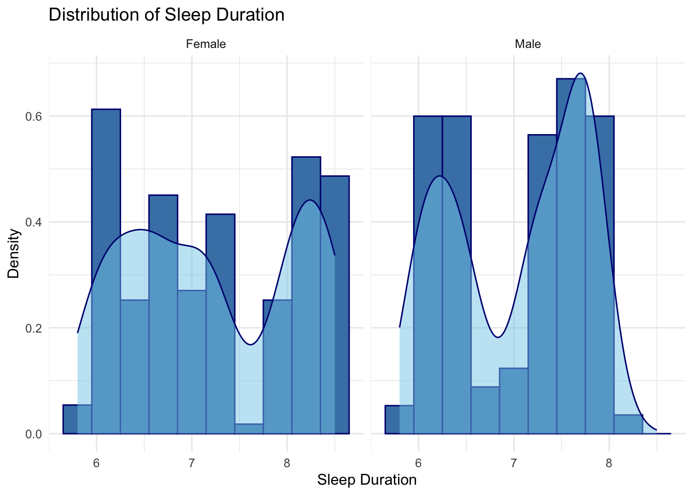
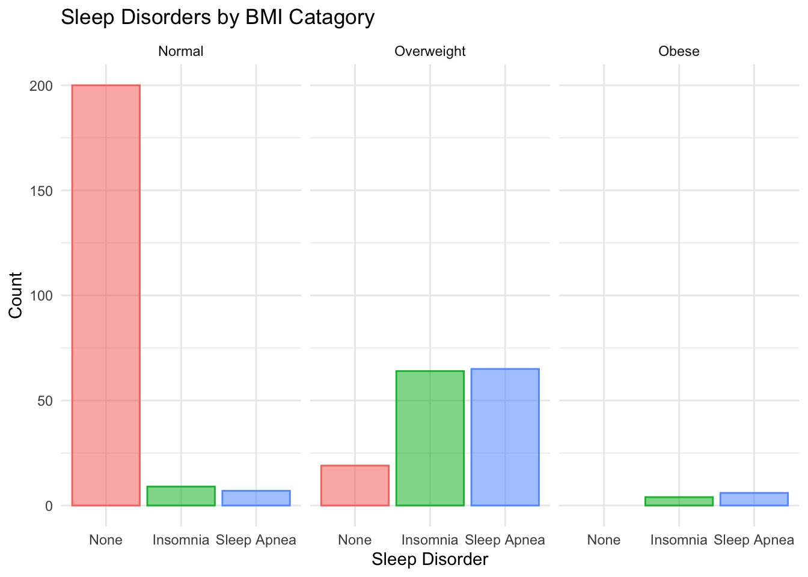

── Attaching core tidyverse packages ──────────────────────── tidyverse 2.0.0 ──
✔ dplyr 1.1.4 ✔ readr 2.1.6
✔ forcats 1.0.1 ✔ stringr 1.6.0
✔ ggplot2 4.0.1 ✔ tibble 3.3.1
✔ lubridate 1.9.4 ✔ tidyr 1.3.2
✔ purrr 1.2.1
── Conflicts ────────────────────────────────────────── tidyverse_conflicts() ──
✖ dplyr::filter() masks stats::filter()
✖ dplyr::lag() masks stats::lag()
ℹ Use the conflicted package (<http://conflicted.r-lib.org/>) to force all conflicts to become errors
library(plotly)
Attaching package: 'plotly'
The following object is masked from 'package:ggplot2':
last_plot
The following object is masked from 'package:stats':
filter
The following object is masked from 'package:graphics':
layout
sleep <-read_csv("data/Sleep_health_and_lifestyle_dataset.csv")|>rename(sleep_quality =`Quality of Sleep`,sleep_duration =`Sleep Duration`,physical_activity =`Physical Activity Level`,stress_level =`Stress Level`,bmi_category =`BMI Category`,sleep_disorder =`Sleep Disorder`) |>select(-`Person ID`, -`Blood Pressure`, -`Heart Rate`, -`Daily Steps`)|>#used the help of chatgpt for these mutates:#prompt: How can I adjust the response "Normal Weight" to "Normal"#Prompt: How can I reorder facets and bars in my bar graph using factor?mutate(bmi_category =str_replace(bmi_category,"Normal Weight", "Normal"),Occupation =str_replace(Occupation, "Sales Representative", "Salesperson"),bmi_category =fct_relevel(bmi_category, "Normal", "Overweight","Obese"),sleep_disorder =fct_relevel(sleep_disorder, "None", "Insomnia", "Sleep Apnea") )
Rows: 374 Columns: 13
── Column specification ────────────────────────────────────────────────────────
Delimiter: ","
chr (5): Gender, Occupation, BMI Category, Blood Pressure, Sleep Disorder
dbl (8): Person ID, Age, Sleep Duration, Quality of Sleep, Physical Activity...
ℹ Use `spec()` to retrieve the full column specification for this data.
ℹ Specify the column types or set `show_col_types = FALSE` to quiet this message.
Introduction:
This dataset from Kaggle looks at how everyday lifestyle factors relate to sleep. It includes 374 observations across 10 different occupations and contains information on sleep duration, stress levels, physical activity, BMI, and sleep disorders. The data allows us to compare sleep patterns across different groups and see how factors like stress, health, and occupation are connected to sleep.
Research Question:
How do lifestyle factors: occupation, physical activity, stress, and BMI influence sleep quality and the likelihood of sleep disorders?
Variables Description:
Demographic Variables
Gender: Categorical variable indicating gender.
Age: Age of the individual.
Sleep Metrics
Sleep Duration: Number of hours an individual sleeps per night.
Quality of Sleep: A score representing sleep quality (typically on a scale, e.g., 1–10).
Sleep Disorder: Categorical variable indicating presence of a sleep disorder (e.g., None, Insomnia, Sleep Apnea).
Lifestyle Variables
Physical Activity Level: Measure of daily physical activity (often minutes per day).
# A tibble: 2 × 2
Gender mean
<chr> <dbl>
1 Female 7.23
2 Male 7.04
ggplot(sleep, aes(x = sleep_duration)) +geom_histogram(fill ="steelblue", color ="navy", bins =10, aes(y =after_stat(density)))+geom_density(color ="navy", fill ="skyblue", alpha = .5)+labs(title ="Distribution of Sleep Duration",x ="Sleep Duration",y ="Density" ) +theme_minimal()+facet_grid(~Gender)

Interpretation: Graph 1 introduces the variable sleep duration by showing its distribution separately for males and females. Females average slightly more sleep at 7.23 hours, compared with 7.04 hours for males, though the difference is small. Both groups show a similar pattern, with most individuals sleeping between 6 and 8 hours, and neither gender appears strongly skewed. This suggests that sleep duration is fairly consistent across genders, providing a balanced starting point for examining how sleep relates to other variables in the dataset.
Graph #2
by_occupation <- sleep|>group_by(Occupation)|>summarise(n =n(),avg_sleep_hrs =mean(sleep_duration),avg_sleep_quality =mean(sleep_quality),avg_stress =mean(stress_level),avg_activity =mean(physical_activity))sleep_vs_stress <-ggplot(by_occupation, aes(x = avg_sleep_hrs, y = avg_stress, label = Occupation, color = Occupation))+geom_point(size =4) +geom_smooth(data = sleep, aes(x = sleep_duration, y = stress_level, group =1), method = lm, se =FALSE, color ="grey90")+labs(title ="The Effects of Stress on Sleep by Occupation",x ="Average Sleep Duration",y ="Average Stress Level",caption ="Each point is an Occupation" ) +theme_minimal()+theme(legend.position ="none")+scale_color_brewer(palette ="Paired")ggplotly(sleep_vs_stress, tooltip ="label")
`geom_smooth()` using formula = 'y ~ x'
Warning: The following aesthetics were dropped during statistical transformation: label.
ℹ This can happen when ggplot fails to infer the correct grouping structure in
the data.
ℹ Did you forget to specify a `group` aesthetic or to convert a numerical
variable into a factor?
Interpretation: Graph 2 examines the relationship between average sleep duration and average stress level across occupations. Each point represents an occupation, and the downward trend line shows a negative correlation between the two variables. Occupations with higher average sleep tend to report lower stress, while occupations with less sleep tend to report higher stress. Although this does not prove that sleep directly reduces stress, the graph suggests that sleep duration may be an important factor associated with perceived stress levels.
Graph #3:
ggplot(sleep, aes(x = sleep_disorder, fill = sleep_disorder, alpha = .7, color = sleep_disorder))+geom_histogram(stat="count")+facet_grid(~bmi_category)+theme_minimal()+theme(legend.position ="none")+labs(title ="Sleep Disorders by BMI Catagory",x ="Sleep Disorder",y ="Count")
Warning in geom_histogram(stat = "count"): Ignoring unknown parameters:
`binwidth` and `bins`

Interpretation: Graph 3 shows how sleep disorders vary across BMI categories. Individuals in the normal BMI category most often report no sleep disorder, while those in the overweight category show noticeably higher counts of both insomnia and sleep apnea. In the obese category, sleep disorders make up a larger share of the group, especially sleep apnea. Overall, the graph suggests that as BMI increases, the likelihood of experiencing a sleep disorder also increases.
Shiny App
library(shiny)library(tidyverse)library(glue)#Strictly for appearance I asked chat GPT to help make all the variable names, title, and table labels cleaner. Definitely not necessary but I wanted it to look clean. petty_label will be used several times later in the codepretty_label <-function(x) {str_replace_all(x, "_", " ") |>str_to_title()}occupation_choices <-unique(sleep$Occupation)#Chat GPT helped me make the variables appear cleaner in the drop down#Prompt: How can I rename my variable names in choices for my shiny app?var_choices <-c("Age"="Age","Sleep Duration"="sleep_duration","Sleep Quality"="sleep_quality","Physical Activity"="physical_activity","Stress Level"="stress_level")ui <-fluidPage(sidebarLayout(sidebarPanel(#Chat GPT helped me learn how to create multiple selection input#Prompt: Is there an option to allow for multiple boxes to be selected in my shiny sidebarpanel?checkboxGroupInput("occupation_choose",label ="Select Occupation(s):",choices = occupation_choices,selected =c("Lawyer", "Software Engineer", "Doctor","Teacher", "Nurse", "Engineer", "Salesperson", "Manager", "Scientist", "Accountant")),selectInput("xaxis_choose",label ="Choose X-Axis Variable:",choices = var_choices,selected ="Age"),selectInput("yaxis_choose",label ="Choose Y-Axis Variable:",choices = var_choices,selected ="sleep_duration")),mainPanel(plotOutput("final_plot"),plotOutput("second_plot"),tableOutput("final_table") ) ))server <-function(input, output, session) { plot_sleep <-reactive({ sleep |>filter(Occupation %in% input$occupation_choose) }) output$final_plot <-renderPlot({ggplot(plot_sleep(),aes(x = .data[[input$xaxis_choose]],y = .data[[input$yaxis_choose]],color = Occupation)) +geom_point(size =2) +#Used Chat GPT to create a geom_smooth for complete data#Prompt: How can I create a single geom_smooth for my data that is currently grouped by color?geom_smooth(aes(group =1), method = lm, se =FALSE, color ="grey90")+theme_minimal(base_size =15) +labs(#Used Chat GPT to learn how to use pretty_label function to clean up the titles on graph# Prompt: Is there a function to clean up my labels on graphs and tables and how do I use it? Give me an example for "Title = glue::glue("Scatterplot of [[input$yaxis_choose]] vs [[input$xaxis_choose]]"title =glue("Scatterplot of {pretty_label(input$yaxis_choose)} vs {pretty_label(input$xaxis_choose)}"),x =pretty_label(input$xaxis_choose),y =pretty_label(input$yaxis_choose),color ="Occupation")+scale_color_brewer(palette ="Paired") }) output$second_plot <-renderPlot({ggplot(plot_sleep(),aes(x = sleep_disorder,fill = sleep_disorder)) +geom_histogram(stat="count")+theme_minimal(base_size =15)+theme(legend.position ="none")+labs(title ="Sleep Disorders by Occupation",x ="Sleep Disorder",y ="Count") }) output$final_table <-renderTable({plot_sleep() |>group_by(Occupation) |>summarise(#Used Chat GPT to clean up table column names#Prompt: How can I use pretty label and glue package to clean up these table names/labels:#Max_Y = max(.data[[input$yaxis_choose]], #Mean_Y = mean(.data[[input$yaxis_choose]]), #Min_Y = min(.data[[input$yaxis_choose]]), #Max_X = max(.data[[input$xaxis_choose]], #Mean_X = mean(.data[[input$xaxis_choose]]), #Min_X = mean(.data[[input$xaxis_choose]]))N =n(),!!glue("Min {pretty_label(input$yaxis_choose)}") :=min(.data[[input$yaxis_choose]]),!!glue("Mean {pretty_label(input$yaxis_choose)}") :=mean(.data[[input$yaxis_choose]]),!!glue("Max {pretty_label(input$yaxis_choose)}") :=max(.data[[input$yaxis_choose]]),!!glue("Min {pretty_label(input$xaxis_choose)}") :=min(.data[[input$xaxis_choose]]),!!glue("Mean {pretty_label(input$xaxis_choose)}") :=mean(.data[[input$xaxis_choose]]),!!glue("Max {pretty_label(input$xaxis_choose)}") :=max(.data[[input$xaxis_choose]])) })}shinyApp(ui, server)
Shiny applications not supported in static R Markdown documents